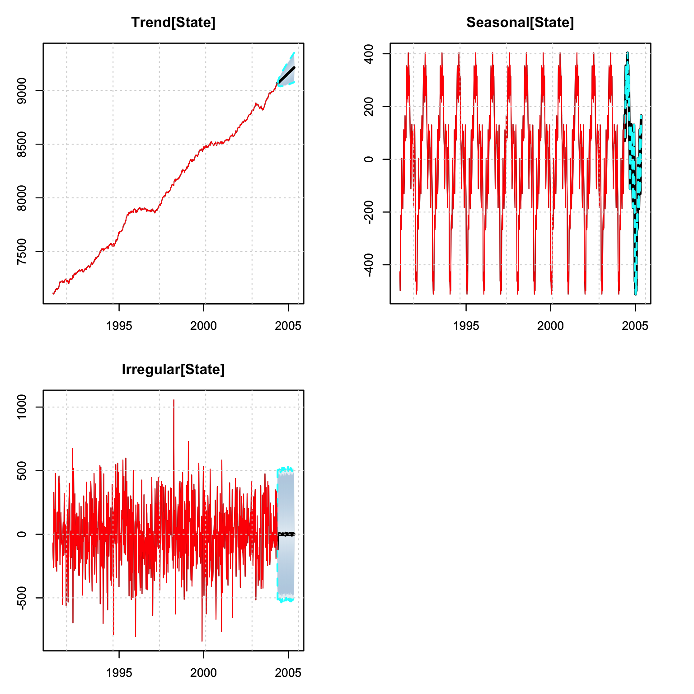

Chapter 4 tsets package
4.1 Introduction
Exponential smoothing was proposed by Robert G. Brown, originally in Brown (1959) and later in Brown (1962), where he developed the general exponential smoothing methodology in the context of inventory management, production planning and control. Independently, Charles C. Holt developed a similar method for exponential smoothing of additive trends and an entirely different method for smoothing seasonal data in Holt (1957). This approach gained popularity following Winters (1960), which tested Holt’s methods with empirical data, from whence the now popular Holt-Winters forecasting system came to prominence. More recently, Hyndman et al. (2002) and Taylor (2003) formalized the framework and provided a taxonomy of the various models under different assumptions on the type of Error (E), Trend (T) and Seasonality (S) components.
In their most basic form, exponential smoothing methods are weighted sums of past observations, with the weights decaying exponentially with older observations. They form a simpler alternative to the more complex structural time series models (see Harvey (1990) and West and Harrison (2006)), by adopting the innovations formulation of the state space representation with all sources of error perfectly correlated.5 The Single Source of Errors model is observationally equivalent to the Multiple Source of Errors model under non-restrictive assumptions, and the interested reader is referred to Casals, Sotoca, and Jerez (1999) for a proof of this.
Formally, the general linear innovations state space model can be written as:
\[\begin{equation} \begin{array}{l} {y_t} &= {\bf{w'}}{{\bf{x}}_{t - 1}} + {\varepsilon _t} ,\\ {{\bf{x}}_t} &= {\bf{F}}{{\bf{x}}_{t - 1}} + {\bf{g}}{\varepsilon _t}, \end{array} \tag{4.1} \end{equation}\]
where \(y_t\) is the observed value at time \(t\), \(\mathbf{x}_t\) the vector of state variables (which may include information about the level, slope, seasonal patterns and exogenous regressors), \(\mathbf{w}\) is the observation matrix and \(\mathbf{F}\) the state transition matrix. An innovations state space model can be reduced to an equivalent ARIMA model with the help of the lag operator \(L\). The state equation can be rewritten as:6
\[\begin{equation} \left( {{\bf{I}} - {\bf{F}}L} \right){\mathbf{x}_t} = {\bf{g}}{\varepsilon _t}. \tag{4.2} \end{equation}\]
Since \({\bf{I}} - {\bf{F}}L\) may not have an inverse, both sides are multiplied by its adjugate7 \(adj{\left( {{\bf{I}} - {\bf{F}}L} \right)}\) to obtain:
\[\begin{equation} \det\left( {{\bf{I}} - {\bf{F}}L} \right){\mathbf{x}_t} = adj{\left( {{\bf{I}} - {\bf{F}}L} \right)}{\bf{g}}{\varepsilon _t}. \tag{4.3} \end{equation}\]
Applying the \(\det\left( {{\bf{I}} - {\bf{F}}L} \right)\) to the observation equation:
\[\begin{equation} \det \left( {{\bf{I}} - {\bf{F}}L} \right){y_t} = {\bf{w'}}\det \left( {{\bf{I}} - {\bf{F}}L} \right){{\mathbf{x}}_{t - 1}} + \det \left( {{\bf{I}} - {\bf{F}}L} \right){\varepsilon _t}, \tag{4.4} \end{equation}\]
and finally replacing \(\det \left( {{\bf{I}} - {\bf{F}}L} \right){{\mathbf{x}}_{t - 1}}\) with the state equation formula we obtain:
\[\begin{equation} \det \left({\bf{I}} - {\bf{F}}L \right){y_t} = {\bf{w'}}\det \left( {{\bf{I}} - {\bf{F}}L} \right){\bf{g}}{\varepsilon _{t - 1}} + \det \left( {{\bf{I}} - {\bf{F}}L} \right){\varepsilon _t}. \tag{4.5} \end{equation}\]
Defining \(\det \left( {{\bf{I}} - {\bf{F}}L} \right)\) as \(\eta\left(L\right)\) and \({\bf{w'}}\det \left( {{\bf{I}} - {\bf{F}}L} \right){\bf{g}}{L} + \det \left( {{\bf{I}} - {\bf{F}}L} \right)\) as \(\theta\left(L\right)\) we obtain the typical ARIMA representation8 \(\eta \left( L \right){y_t} = \theta \left( L \right){\varepsilon _t}\), where \(\eta\left(L\right)\) and \(\theta\left(L\right)\) are polynomials in the lag operator \(L\) and may include powers of \(L\) related to the seasonal period \(m\). To obtain the ARIMA representation, set \(\eta \left( L \right){y_t} = \phi \left( L \right)\delta \left( L \right){y_t}\), where \(\delta\left(L\right)\) contains all unit roots of the polynomial.
Typical examples include the damped local trend model,9 which can be represented by an ARIMA(1,1,2) model and the local linear trend model, which can be represented as an ARIMA(0,2,2) model. On the other hand, an ARIMA(2,0,2) model with complex roots, which gives rise to cyclical behavior, cannot be represented by an exponential smoothing model.
4.2 Taxonomy of Models
Table 4.1 presents the taxonomy proposed by Pegels (1969) and Gardner Jr (1985) for exponential smoothing models. In addition, for each of the 12 model combinations presented, it is possible to have either additive or multiplicative errors, giving rise to the ETS formulation of Error, Trend and Seasonal. For instance, the MAM model corresponds to Multiplicative Error, Additive Trend and Multiplicative Seasonality.
| N | A | M | |
|---|---|---|---|
| (none) | (additive) | (multiplicative) | |
| N (none) | NN | NA | NM |
| A (additive) | AN | AA | AM |
| M (multiplicative) | MN | MA | MM |
| D (damped) | DN | DA | DM |
Following Ord, Koehler, and Snyder (1997) and Hyndman et al. (2002), we present a state space formulation the ETS modelling system.
\[\begin{equation} \begin{array}{l} {y_t} = h\left( {{\mathbf{x}_{t - 1}}} \right) + k\left( {{\mathbf{x}_{t - 1}}} \right){\varepsilon _t},\\ {\mathbf{x}_t} = f\left( {{\mathbf{x}_{t - 1}}} \right) + g\left( {{\mathbf{x}_{t - 1}}} \right){\varepsilon _t}, \end{array} \tag{4.6} \end{equation}\]
where \({\varepsilon _t} \sim N\left( {0,{\sigma ^2}} \right)\) and \({\mathbf{x}_t} = \left\{ {{l_t},{b_t},{s_{t - 1}},...,{s_{t - \left( {m - 1} \right)}}} \right\}\). Defining \({e_t} = k\left( {{x_{t - 1}}} \right){\varepsilon _t}\) and \({\mu _t} = h\left( {{x_{t - 1}}} \right)\), then \({y_t} = {\mu _t} + {e_t}\). When errors are additive, then \(y_t=\mu_t + \varepsilon_t\) and \(k\left( {{x_{t - 1}}} \right)=1\), whilst when errors are multiplicative, then \(y_t=\mu_t\left(1+\varepsilon_t\right)\) and therefore \(k\left( {{x_{t - 1}}} \right)=\mu_t\) so that \(\varepsilon_t=\frac{\left(y_t-\mu_t\right)}{\mu_t}\) represents a relative error. For illustration, we show below the additive error with additive trend and seasonality:
\[\begin{equation} \begin{array}{l} {{\hat y}_t} = {l_{t - 1}} + \phi {b_{t - 1}} + {s_{t - m}},\\ {\varepsilon _t} = {y_t} - {{\hat y}_t},\\ {l_t} = {l_{t - 1}} + \phi {b_{t - 1}} + \alpha {\varepsilon _t},\\ {b_t} = \phi {b_{t - 1}} + \beta {\varepsilon _t},\\ {s_t} = {s_{t - m}} + \gamma {\varepsilon _t}, \end{array} \tag{4.7} \end{equation}\]
with \(\phi\) representing the damping parameter which is equal to one when there is no damping. The \(h\)-step ahead forecast is then given as:
\[\begin{equation} {y_{t + h}} = \left\{ {\begin{array}{*{20}{c}} {{l_t} + h{b_t} + {s_{t - m + h_m^ + }}},&{\phi \in \left\{ \emptyset \right\}},\\ {{l_t} + {\phi^h}{b_t} + {s_{t - m + h_m^ + }}},&{\phi \in [0,1]}, \end{array}} \right. \tag{4.8} \end{equation}\]
where \(h_m^ + = \left[ {\left( {h - 1} \right)\bmod m} \right] + 1\).
4.3 Extensions
A number of extensions have been suggested and too numerous to outline here. One interesting model proposed by Koehler, Snyder, and Ord (2001) is the decomposition of the MAM model to include power terms as follows:
\[\begin{equation} \begin{array}{l} {y_t} = \left( {{l_{t - 1}} + \phi {b_{t - 1}}} \right){s_{t - m}} + {\left( {{l_{t - 1}} + \phi {b_{t - 1}}} \right)^\theta }{s^\delta }_{t - m}{\varepsilon _t},\\ {l_t} = \left( {{l_{t - 1}} + \phi {b_{t - 1}}} \right) + \alpha {\left( {{l_{t - 1}} + \phi {b_{t - 1}}} \right)^\theta }{s_{t - m}^{\delta - 1}}{\varepsilon _t},\\ {b_t} = \phi {b_{t - 1}} + \beta {\left( {{l_{t - 1}} + \phi {b_{t - 1}}} \right)^\theta }{s_{t - m}^{\delta - 1}}{\varepsilon _t},\\ {s_t} = {s_{t - m}} + \gamma {\left( {{l_{t - 1}} + \phi {b_{t - 1}}} \right)^{\theta - 1}}{s_{t - m}^\delta}{\varepsilon _t}. \end{array} \tag{4.9} \end{equation}\]
When \(\theta=1\) and \(\delta=1\), this reduces to the standard MAM model. When \(\theta=0\) and \(\delta=0\) this is reduces to the AAM model or the AAN model if there is no seasonal term. The exponents can be thought as controlling the degree of heteroscedasticity in the data, since the unscaled residuals \(\epsilon_t\) are distributed as:
\[\begin{equation} {\epsilon_t} = {y_t} - \left( {{l_{t - 1}} + \phi {b_{t - 1}}} \right){s_{t - m}},\quad {\epsilon_t} | \mathcal{F}_{t-1} \sim N\left( {0,{{\left( {{l_{t - 1}} + \phi {b_{t - 1}}} \right)}^{2\theta} }{s_{t-m}^{2\delta}} \sigma^2 } \right), \tag{4.10} \end{equation}\]
which is an appealing alternative to Box Cox and related transformations. For instance, as R. Hyndman et al. (2008) 4.4.5 notes, a value of \(\theta=1/3\) would produce a variance proportional to the \(2/3\) power of the mean, similar to the cube root transformation.
Normalized seasonality, discussed in Roberts (1982) and McKenzie (1986), can be used to de-seasonalize the data, by acting as a filter, and is required for implementing the Wiener-Kolmogorov (WK) filter (smoother). This is discussed in more detail in Chapter 8 of R. Hyndman et al. (2008), and is implemented as an option in the tsets package.
Another avenue of interest is in the multivariate generalization of the model presented in De Silva, Hyndman, and Snyder (2010). It has the ability to incorporate common levels, trends or seasonality and is implemented in the tsvets package.
4.4 Some Encompasing Alternatives
The general state space representation (see Harvey (1990)), based on the multiple sources of error (MSOE) state space model, provides a more general implementation of the unobserved components model, albeit requiring the use of the Kalman filter for estimation. The model is flexible enough to incorporate many types of additive models, including cyclical behavior and regressors, although the nonlinear (multiplicative) variations require the extended Kalman filter for estimation. The bsts package of Scott and Varian (2015) provides fast and efficient computation of Bayesian Unobserved Components, with the option of a spike and slab prior for regressor regularization, for which we provide a wrapper in the tsforeign package.
4.5 Package Implementation
The tsets package implements 4 families of models, whose equations are given in Tables 4.2 and 4.3. These are the full equations assuming all variables (trend, damped, seasonal and regressors) enter the model, but any and all combinations of the variables are allowed. Methods implemented include Quasi-ML estimation, prediction, simulation, plotting and post-estimation diagnostics.
| Equation | AAA | MMM |
|---|---|---|
| Observation | \({y_t} = {l_{t - 1}} + \phi{b_{t - 1}} + {s_{t - m}} + \bf{x}_{t - 1}\bf{w} + \varepsilon_t\) | \({y_t} = {l_{t - 1}}{b_{t-1}^\phi}\left(\bf{x}_{t-1}\bf{w}\right){s_{t - m}}\left(1 + \varepsilon _t\right)\) |
| Mean | \({\mu _t} = {l_{t - 1}} + \phi{b_{t - 1}} + {s_{t - m}} + {{\bf{x}}_{t - 1}}{\bf{w}}\) | \({\mu_t} = {l_{t - 1}}{b^\phi_{t - 1}}\left( {{{\bf{x}}_{t-1}}{\bf{w}}} \right){s_{t - m}}\) |
| Distribution | \({\hat y_t}\left| {{\Im _{t - 1}} \sim N\left( {{\mu _t},\sigma } \right)} \right.\) | \({{\hat y}_t}\left| {{\Im _{t - 1}} \sim N\left( {{\mu _t},{l_{t - 1}}{b_{t-1}^\phi}\left( {{{\bf{x}}_{t-1}}{\bf{w}}} \right){s_{t - m}}\sigma } \right)} \right.\) |
| Error | \({\varepsilon _t} = {y_t} - {\mu _t}\) | \({\varepsilon _t} = \frac{{{y_t} - {\mu _t}}}{{{l_{t - 1}}{b}_{t - 1}^\phi \left( {{{\bf{x}}_{t-1}}{\bf{w}}} \right){s_{t - m}}}}\) |
| Level[State] | \({l_t} = {l_{t - 1}} + \phi {b_{t - 1}} + \alpha {\varepsilon _t}\) | \({l_t} = {l_{t - 1}}{b_{t-1}^\phi}\left( {1 + \alpha {\varepsilon _t}} \right)\) |
| Trend[State] | \({b_t} = \phi {b_{t - 1}} + \beta {\varepsilon _t}\) | \({b_t} = {b_{t-1}^\phi}\left( {1 + \beta {\varepsilon _t}} \right)\) |
| Seasonal[State] | \({s_t} = {s_{t - m}} + \gamma {\varepsilon _t}\) | \({s_t} = {s_{t - m}}\left( {1 + \gamma {\varepsilon _t}} \right)\) |
| Equation | MAM | powerMAM |
|---|---|---|
| Observation | \({y_t} = \left( {{l_{t - 1}} + \phi {b_{t - 1}} + {{\bf{x}}_{t - 1}}{\bf{w}}} \right){s_{t - m}}\left( {1 + {\varepsilon _t}} \right)\) | \({y_t} = \left( {{l_{t - 1}} + \phi {b_{t - 1}} + {{\bf{x}}_{t - 1}}{\bf{w}}} \right){s_{t - m}} + {\left( {{l_{t - 1}} + \phi {b_{t - 1}} + {{\bf{x}}_{t - 1}}{\bf{w}}} \right)^\theta }s_{t - m}^\delta {\varepsilon _t}\) |
| Mean | \({\mu _t} = \left( {{l_{t - 1}} + \phi {b_{t - 1}} + {{\bf{x}}_{t - 1}}{\bf{w}}} \right){s_{t - m}}\) | \({\mu _t} = \left( {{l_{t - 1}} + \phi {b_{t - 1}} + {{\bf{x}}_{t - 1}}{\bf{w}}} \right){s_{t - m}}\) |
| Distribution | \({\hat y_t}\left| {{\Im _{t - 1}} \sim N\left( {{\mu _t},\left( {{l_{t - 1}} + \phi {b_{t - 1}} + {{\bf{x}}_{t - 1}}{\bf{w}}} \right){s_{t - m}}\sigma } \right)} \right.\) | \({\hat y_t}\left| {{\Im _{t - 1}} \sim N\left( {{\mu _t},{{\left( {{l_{t - 1}} + \phi {b_{t - 1}} + {{\bf{x}}_{t - 1}}{\bf{w}}} \right)}^\theta }s_{t - m}^\delta \sigma } \right)} \right.\) |
| Error | \({\varepsilon _t} = \frac{{{y_t} - {\mu _t}}}{{\left( {{l_{t - 1}} + \phi {b_{t - 1}} + {{\bf{x}}_{t - 1}}{\bf{w}}} \right){s_{t - m}}}}\) | \({\varepsilon _t} = \frac{{{y_t} - {\mu _t}}}{{{{\left( {{l_{t - 1}} + \phi {b_{t - 1}} + {{\bf{x}}_{t - 1}}{\bf{w}}} \right)}^\theta }s_{t - m}^\delta }}\) |
| Level[State] | \({l_t} = \left( {{l_{t - 1}} + \phi {b_{t - 1}}} \right)\left( {1 + \alpha {\varepsilon _t}} \right)\) | \({l_t} = \left( {{l_{t - 1}} + \phi {b_{t - 1}}} \right) + \alpha {\left( {{l_{t - 1}} + \phi {b_{t - 1}}} \right)^\theta }s_{t - m}^{\delta - 1}{\varepsilon _t}\) |
| Trend[State] | \({b_t} = \phi {b_{t - 1}} + \beta \left( {{l_{t - 1}} + \phi {b_{t - 1}}} \right){\varepsilon _t}\) | \({b_t} = \phi {b_{t - 1}} + \beta {\left( {{l_{t - 1}} + \phi {b_{t - 1}}} \right)^\theta }s_{t - m}^{\delta - 1}{\varepsilon _t}\) |
| Seasonal[State] | \({s_t} = {s_{t - m}}\left( {1 + \gamma {\varepsilon _t}} \right)\) | \({s_t} = {s_{t - m}} + \gamma {\left( {{l_{t - 1}} + \phi {b_{t - 1}}} \right)^{\theta - 1}}s_{t - m}^\delta {\varepsilon _t}\) |
4.5.1 Constraints
Variables in the additive ETS type models need to be constrained in order to achieve stability and forecastability, and the interested reader should consult Section 10.2 of R. J. Hyndman, Akram, and Archibald (2008) for more details. These conditions become increasingly complex depending on the components included in the model. In our implementation we have opted for the following simple conditions:
- \(\alpha \in \left[ {0,1} \right]\),
- \(\beta \in \left[ {0,\alpha } \right]\),
- \(\gamma \in \left[ {0,1 - \alpha } \right]\),
- \(\phi \in \left[ {0.5,1} \right]\),
- \(\theta \in \left[ {0,1} \right]\),
- \(\delta \in \left[ {0,1} \right]\),
- \(\sigma \in {{\bf{R}}_+ }\).
For multiplicative models, we simply impose that \(\max\left(\alpha,\beta,\gamma\right)<1\) and \(\varepsilon_t>-1\), although we do not impose the last condition for estimation (only for simulation).
4.5.2 Initialization
To obtain a reasonable set of parameters for the initialization conditions of the states as well as the parameters, we obtain values for \(l_0\), \(b_0\) and \(s_0\) using the heuristic approach described in Section 5.2 of R. Hyndman et al. (2008). There is also an option for estimating the initial states for the seasonal component.
4.5.3 Transformations
Variance stabilizing transformations form an important part of the pre-processing of the outcome variable in order to achieve certain statistical properties which help reduce misspecification of the model. At present, we implement the Box-Cox transformation with an option for automatic tuning of the parameter \(\lambda\) using the method of Guerrero (1993), from the tsaux package.
4.6 Demonstration
4.6.1 The Specification Object
The entry specification function is called ets_modelspec
## function (y, model = "AAN", damped = FALSE, power = FALSE, xreg = NULL,
## frequency = NULL, lambda = NULL, normalized_seasonality = TRUE,
## fixed_pars = NULL, scale = FALSE, seasonal_init = "fixed",
## lambda_lower = 0, lambda_upper = 1, sampling = NULL, ...)
## NULLThis requires passing in an xts vector y, followed by a number of options described below:
model: The ETS model type.damped: Whether to dampen the trend.power: The power MAM model (only applicable to the MAM).xreg: Anxtsmatrix of regressors.frequency: The seasonal frequency ofy, only needed if using a seasonal model.lambda: The Box Box transformation parameter. IfNA, will estimate it.normalized_seasonality: Whether to impose the normalized approach of McKenzie (1986).fixed_pars: An optional named vector of fixed parameters.scale: Whether to pre-scale the data prior to estimation (will rescale back after estimation).seasonal_init: Whether to “estimate” or use the heuristic (“fixed”) values for the initial states.sampling: An optional string denoting the sampling frequency of the data (will try to discover it ifNULL).
4.6.2 Estimation
For illustration, we use the gas dataset from the tsdatasets package, representing weekly US finished motor gasoline products supplied (in thousands of barrels per day) from February 1991 to May 2005.
data(gas, package = "tsdatasets")
spec <- ets_modelspec(gas[1:(NROW(gas) - 52)], model = "AAA", frequency = 52,
lambda = NA)
str(spec, max.level = 1)## List of 5
## $ target :List of 6
## $ model :List of 14
## $ seasonal :List of 1
## $ transform:List of 3
## $ xreg :List of 3
## - attr(*, "class")= chr [1:2] "tsets.spec" "tsmodel.spec"The specification object returns a list which inherits the tsmodel.spec class and has a number of slots. Common across the tsmodels framework will be the target slot, which has the target variable with details on its sampling frequency among others, the transform slot, which contains the Box Cox transformation and its inverse, and the xreg slot, which contains any optionally including external regressors.
mod <- estimate(spec)
# automatic selection
# mod_auto <- auto_ets(gas[1:(NROW(gas) - 52)], frequency = 52, lambda = NA,
# metric = "MSLRE", cores = 4)
summary(mod)##
## ETS Model [ AAA ]
##
## Param Description Est[Value]
## ------------------------------------------------
## alpha State[Level-coef] 3.453e-02
## beta State[Slope-coef] 1.000e-04
## gamma State[Seasonal-coef] 0.000e+00
## l0 State[Level-init] 7.108e+03
## b0 State[Slope-init] 2.762e+00
## sigma Observation[Standard Deviation] 2.621e+02
##
## AIC BIC AICc
## 12364.03 12622.87 12374.44
##
## MAPE MASE MSLRE BIAS
## 0.0262 0.6369 0.0011 9e-04A number of methods exist for post-estimation inference which we illustrate below.
## 'log Lik.' -6125.014 (df=6)## [1] 12364.03## alpha beta gamma l0 b0
## 0.03453123 0.00010000 0.00000000 7107.77952558 2.76244932
## s0 s1 s2 s3 s4
## -506.79631332 -447.01230297 -476.68115042 -131.08931857 -75.93870995
## s5 s6 s7 s8 s9
## 143.22584577 46.91957489 43.84601545 -181.85203203 -122.91905990
## s10 s11 s12 s13 s14
## -40.83137039 103.34065156 62.24143451 58.63763652 132.14003123
## s15 s16 s17 s18 s19
## 59.26762186 -31.24376860 -111.26657179 32.98945507 80.23597147
## s20 s21 s22 s23 s24
## 168.50761693 317.79677244 249.90941754 359.85242961 244.12706217
## s25 s26 s27 s28 s29
## 407.14465533 203.11825390 351.43412704 234.96291063 362.88019416
## s30 s31 s32 s33 s34
## 323.72973094 240.69933477 46.86023690 50.98268170 76.04708428
## s35 s36 s37 s38 s39
## 186.30912129 45.32728297 -17.11459876 -162.83816007 160.46100413
## s40 s41 s42 s43 s44
## -55.24277755 -142.44683934 -168.46179046 -133.42406098 -90.89932875
## s45 s46 s47 s48 s49
## -1.46974286 -278.23593662 -266.81064348 -225.95612406 -232.58290454
## s50 sigma
## -478.24412479 262.06262972## residuals
## 1991-02-01 -80.31776
## 1991-02-08 -203.58198
## 1991-02-15 -296.03378
## 1991-02-22 346.48235
## 1991-03-01 23.83767
## 1991-03-08 103.65627## residuals
## 1991-02-01 -80.36452
## 1991-02-08 -203.70024
## 1991-02-15 -296.20633
## 1991-02-22 346.68537
## 1991-03-01 23.85160
## 1991-03-08 103.71685## fitted
## 1991-02-01 6701.365
## 1991-02-08 6636.700
## 1991-02-15 6878.206
## 1991-02-22 6877.315
## 1991-03-01 6851.148
## 1991-03-08 6843.283
##
## Weighted Ljung-Box Test [scaled residuals]
## ------------------------------------------
## Lag statistic pvalue
## [1] 9.09 0.00256
## [2] 9.44 0.00269
## [3] 10.79 0.00195
## [4] 11.49 0.00220
##
## Parameter Bounds and Conditions
## ------------------------------------------
## coef value >lb <ub condition condition_pass
## alpha 0.0345 TRUE TRUE NA NA
## beta 0.0001 TRUE TRUE < alpha TRUE
## gamma 0.0000 TRUE TRUE < (1 - alpha) TRUE
## phi NA TRUE TRUE NA NA
## theta NA TRUE TRUE NA NA
## delta NA TRUE TRUE NA NA
##
## Outlier Diagnostics (based on Rosner Test)
## ------------------------------------------
## Outliers: 1998-03-27## n no.pars LogLik AIC BIC AICc MAPE MASE
## 1 693 56 -6125.014 12364.03 12622.87 12374.44 0.02621505 0.636897
## MSLRE BIAS
## 1 0.001093048 0.0008632586tsd_mod <- tsdecompose(mod)
tsd_mod <- do.call(cbind, lapply(1:length(tsd_mod), function(i) tsd_mod[[i]]))
head(tsd_mod)## fitted Residuals Level Slope Seasonal
## 1991-02-01 6701.365 -80.31776 7107.769 2.754418 -478.244125
## 1991-02-08 6636.700 -203.58198 7103.493 2.734059 -232.582905
## 1991-02-15 6878.206 -296.03378 7096.005 2.704456 -225.956124
## 1991-02-22 6877.315 346.48235 7110.674 2.739104 -266.810643
## 1991-03-01 6851.148 23.83767 7114.236 2.741488 -278.235937
## 1991-03-08 6843.283 103.65627 7120.557 2.751854 -1.4697434.6.3 Prediction
All prediction objects in the tsmodels framework are of class tsmodel.predict, with slots for the original series and the forecast distribution (the latter being of class tsmodel.distribution). Some prediction objects will contain additional slots, usually the original specification object as well as the state component predicted decomposition (also of class tsmodel.distribution).
## [1] "tsets.predict" "tsmodel.predict"## List of 6
## $ distribution : 'tsets.distribution' num [1:5000, 1:52] 9362 8703 8938 9120 9283 ...
## ..- attr(*, "dimnames")=List of 2
## ..- attr(*, "date_class")= chr "Date"
## $ original_series:'zoo' series from 1991-02-01 to 2004-05-07
## Data: num [1:693] 6621 6433 6582 7224 6875 ...
## Index: Date[1:693], format: "1991-02-01" "1991-02-08" ...
## $ h : num 52
## $ spec :List of 5
## ..- attr(*, "class")= chr [1:2] "tsets.spec" "tsmodel.spec"
## $ decomposition :List of 6
## $ mean :'zoo' series from 2004-05-14 to 2005-05-06
## Data: Named num [1:52] 9147 9125 9126 9316 9403 ...
## ..- attr(*, "names")= chr [1:52] "2004-05-14" "2004-05-21" "2004-05-28" "2004-06-04" ...
## Index: Date[1:52], format: "2004-05-14" "2004-05-21" ...
## - attr(*, "class")= chr [1:2] "tsets.predict" "tsmodel.predict"p_decomp <- tsdecompose(p)
par(mfrow = c(2,2), mar = c(3,3,3,3))
plot(p_decomp$Level, main = "Level[State] Predicted Distribution")
plot(p_decomp$Slope, main = "Slope[State] Predicted Distribution")
plot(p_decomp$Seasonal, main = "Seasonal[State] Predicted Distribution")
plot(p_decomp$Error, main = "Simulated Error Distribution")
Since we left 52 points for out-of-sample testing, we are able to evaluate the prediction using the tsmetrics method on a predicted object. This method also takes the original series as an input in order to calculate MASE in the presence of seasonality. The alpha parameter is the coverage rate for calculation of the Mean Interval Score of Gneiting and Raftery (2007).
## h MAPE MASE MSLRE BIAS MIS
## 1 52 0.01445789 0.4013524 0.0003933292 0.003362753 1088.3tsd_predict <- tsdecompose(p)
par(mfrow = c(2,2), mar = c(3,3,3,3))
plot(tsd_predict$forecast, main = "Prediction")
plot(tsd_predict$Level, main = "Level[State]")
plot(tsd_predict$Slope, main = "Slope[State]")
plot(tsd_predict$Seasonal, main = "Seasonal[State]")
4.6.4 Filtering
Online filtering is when new data arrives and instead of re-estimating the model, we instead just filter the new data based on an existing model. In the tsets package the tsfilter method updates an object of class tsmodel.estimate with new data as the example below illustrates. Because the class of the model is retained and only updated (both data and states) with new information, it is also possible to apply any method to that which admits that object (e.g. predict).
## fitted
## 2004-05-07 9259.272## fitted
## 2004-05-07 9259.272
## 2004-05-14 9146.997## fitted
## 2004-05-07 9259.272## fitted
## 2004-05-07 9259.272
## 2004-05-14 9146.997
## 2004-05-21 9125.058## 2004-05-14 2004-05-21 2004-05-28 2004-06-04 2004-06-11 2004-06-18
## 9162.706 9139.950 9118.101 9322.523 9406.679 9467.352## 2004-05-28 2004-06-04 2004-06-11 2004-06-18 2004-06-25 2004-07-02
## 9122.006 9316.075 9409.362 9436.874 9325.672 9452.2254.6.5 Simulation
An estimated object can also be simulated from, with the parameters and initial states overridden by passing them as named values in the pars argument. The default is to initialize the states from the seed states used in the estimated object, with h equal to the length of the original series (default for NULL h).
Innovations for the simulation can either be parametric (normal for additive or truncated normal for multiplicative error models), based on the estimated residuals (bootstrap argument) or a user supplied set of uniform random numbers (which are then translated into normal or truncated normal using standard deviation equal to the model sigma and optionally scaled by sigma_scale).
par(mar = c(3,3,3,3), mfrow = c(4, 1))
matplot(as.Date(colnames(sim$Simulated)), t(sim$Simulated[1:10, ]), type = "l",
ylab = "", main = "Simulated Paths", xlab = "")
grid()
matplot(as.Date(colnames(sim$Simulated)), t(sim$Level[1:10, ]), type = "l",
ylab = "", main = "Simulated Level", xlab = "")
grid()
matplot(as.Date(colnames(sim$Simulated)), t(sim$Slope[1:10, ]), type = "l",
ylab = "", main = "Simulated Slope", xlab = "")
grid()
# not much on the seasonal since gamma coefficient is zero
matplot(as.Date(colnames(sim$Simulated)), t(sim$Seasonal[1:10, ]), type = "l",
ylab = "", main = "Simulated Seasonal", xlab = "")
grid()
4.6.6 Profiling
The tsprofile function profiles an estimated model by simulating and then estimating multiple paths from the assumed DGP while leaving h values out for prediction evaluation. Each simulated path is equal to the size of the original dataset plus h additional values, and initialized with the initial state vector from the model. The resulting output contains the distribution of the MAPE, percent bias (BIAS) and mean squared log relative error (MSLRE) per horizon h. Since these matrices are of class tsmodel.distribution, they can be readily plotted with the special purpose plot function for this class from the tsmethods package. Additionally, a data.table matrix is also return with the distribution of the coefficients from each path estimation.
# profiling
prof <- tsprofile(mod, h = 52, nsim = 1000, cores = 4, trace = 0)
plot(prof, type = "metrics")
4.6.7 Backtesting
The tsbacktest method generates an expanding window, walk forward backtest, returning a list with the estimation/horizon predictions against actuals, as well as a table of average performance metrics by horizon.
## horizon variable MAPE MSLRE BIAS n MIS[0.02] MIS[0.1]
## 1: 1 y 0.02719118 0.001169433 -0.0004603201 347 1679.139 1188.918
## 2: 2 y 0.02693041 0.001155618 -0.0004865995 346 1708.493 1188.310
## 3: 3 y 0.02705806 0.001158089 -0.0003868899 345 1686.740 1175.872
## 4: 4 y 0.02708764 0.001164290 -0.0004667140 344 1709.906 1183.159
## 5: 5 y 0.02708754 0.001163591 -0.0004585236 343 1734.368 1186.050
## 6: 6 y 0.02687278 0.001146714 -0.0006670401 342 1695.671 1183.411plot(b$metrics$horizon, b$metrics$MAPE*100, main = "Horizon MAPE", type = "l",
ylab = "MAPE[%]", xlab = "horizon")
grid()
4.6.8 Benchmarking
The tsbenchmark method is used to benchmark a model for timing and accuracy and can be used as a unit testing function.
bench <- rbind(tsbenchmark(spec, solver = "optim"),
tsbenchmark(spec, solver = "nlminb"),
tsbenchmark(spec, solver = "solnp"))
bench## start end spec estimate
## 1: 2020-11-25 14:11:28 2020-11-25 14:11:28 <tsets.spec[5]> <tsets.estimate[3]>
## 2: 2020-11-25 14:11:28 2020-11-25 14:11:28 <tsets.spec[5]> <tsets.estimate[3]>
## 3: 2020-11-25 14:11:28 2020-11-25 14:11:29 <tsets.spec[5]> <tsets.estimate[3]>
## solver control loglik
## 1: optim 0 -6126.568
## 2: nlminb 0 -6125.014
## 3: solnp 0 -6125.014References
Brown, Robert Goodell. 1959. Statistical Forecasting for Inventory Control. McGraw/Hill.
Brown, Robert Goodell. 1962. “Smoothing, Forecasting and Prediction of Discrete Time Series.”
Casals, José, Sonia Sotoca, and Miguel Jerez. 1999. “A Fast and Stable Method to Compute the Likelihood of Time Invariant State-Space Models.” Economics Letters 65 (3): 329–37.
De Silva, Ashton, Rob J Hyndman, and Ralph Snyder. 2010. “The Vector Innovations Structural Time Series Framework: A Simple Approach to Multivariate Forecasting.” Statistical Modelling 10 (4): 353–74.
Gardner Jr, ES. 1985. “Exponential Smoothing: The State of the Art.” Journal of Forecasting 4 (1): 1–28.
Gneiting, Tilmann, and Adrian E Raftery. 2007. “Strictly Proper Scoring Rules, Prediction, and Estimation.” Journal of the American Statistical Association 102 (477): 359–78.
Guerrero, Victor M. 1993. “Time-Series Analysis Supported by Power Transformations.” Journal of Forecasting 12 (1): 37–48.
Harvey, Andrew C. 1990. Forecasting, Structural Time Series Models and the Kalman Filter. Cambridge university press.
Holt, Charles. 1957. “Forecasting Trends and Seasonals by Exponential Weighted Averages.” ONR Memorandum 52: 1957.
Hyndman, Rob J, Muhammad Akram, and Blyth C Archibald. 2008. “The Admissible Parameter Space for Exponential Smoothing Models.” Annals of the Institute of Statistical Mathematics 60 (2): 407–26.
Hyndman, Rob J, Anne B Koehler, Ralph D Snyder, and Simone Grose. 2002. “A State Space Framework for Automatic Forecasting Using Exponential Smoothing Methods.” International Journal of Forecasting 18 (3): 439–54.
Hyndman, Rob, Anne B Koehler, J Keith Ord, and Ralph D Snyder. 2008. Forecasting with Exponential Smoothing: The State Space Approach. Springer Science & Business Media.
Koehler, Anne B, Ralph D Snyder, and J Keith Ord. 2001. “Forecasting Models and Prediction Intervals for the Multiplicative Holt-Winters Method.” International Journal of Forecasting 17 (2): 269–86.
McKenzie, Ed. 1986. “Error Analysis for Winters’ Additive Seasonal Forecasting System.” International Journal of Forecasting 2 (3): 373–82.
Ord, John Keith, Anne B Koehler, and Ralph D Snyder. 1997. “Estimation and Prediction for a Class of Dynamic Nonlinear Statistical Models.” Journal of the American Statistical Association 92 (440): 1621–9.
Pegels, C. Carl. 1969. “Exponential Forecasting: Some New Variations.” Management Science 15 (5): 311–15.
Roberts, SA. 1982. “A General Class of Holt-Winters Type Forecasting Models.” Management Science 28 (7): 808–20.
Scott, Steven L, and Hal R Varian. 2015. “Bayesian Variable Selection for Nowcasting Economic Time Series.” Economic Analysis of the Digital Economy, 119–35.
Taylor, James W. 2003. “Exponential Smoothing with a Damped Multiplicative Trend.” International Journal of Forecasting 19 (4): 715–25.
West, Mike, and Jeff Harrison. 2006. Bayesian Forecasting and Dynamic Models. Springer Science & Business Media.
Winters, Peter R. 1960. “Forecasting Sales by Exponentially Weighted Moving Averages.” Management Science 6 (3): 324–42.
Also called Single Source of Error (SSOE) models.↩︎
The adjugate of a matrix \(\mathbf{A}\) is the transpose of the cofactor matrix \(\mathbf{C}\) of \(\mathbf{A}\): \(adj\left(\mathbf{A}\right)=\mathbf{C}^\mathbf{T}\).↩︎
After the elimination of any common factors between the polynomials.↩︎
In the terminology of the ETS models this is (A,Ad,N).↩︎